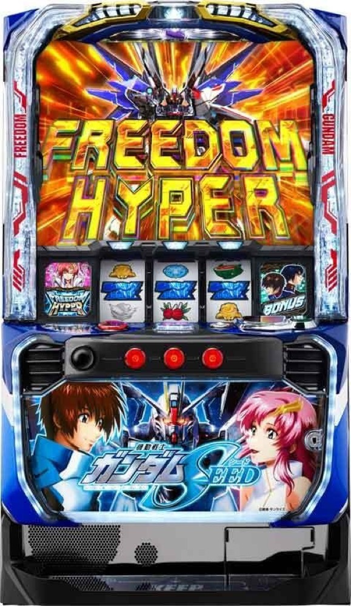

Lパチスロ 機動戦士ガンダムSEED
18Gのストライクアタックから3種類のBONUSへ。20G＋αのSTをつなぎ、フリーダムハイパーを目指す。
- 導入
- 2025年5月
- メーカー
- ビスティ
- 分類
- パチスロ
主要スペック
小役でHITマスをつなぐ18GのCZ、約100・200・300枚のBONUS、20G＋αのストライクライド、3Gの瞬間決着バトル、5Gの宿命ZONE、前半5G＋後半5Gのストライクバースト、1セット10Gのフリーダムハイパーまでを専用画面で体験できます。
- ストライクアタックは18G・成功期待度約62%
- BONUSは約100／200／300枚・純増約6.5枚/G
- ストライクライドは20G＋α・継続約70%
- 上位ATは1セット10G・継続約96%
Lパチスロ 機動戦士ガンダムSEEDの見どころと計算条件
小役でHITマスをつなぐ18GのCZ、約100・200・300枚のBONUS、20G＋αのストライクライド、3Gの瞬間決着バトル、5Gの宿命ZONE、前半5G＋後半5Gのストライクバースト、1セット10Gのフリーダムハイパーまでを専用画面で体験できます。
スマスロ ガンダムSEEDを数字で早分かり
18Gのストライクアタック、3種類のBONUS、20G＋αのST、瞬間決着バトル、宿命ZONE、ストライクバースト、フリーダムハイパーを機種専用で記録します。
30秒で分かるスマスロ ガンダムSEED
18GのCZから3種類のBONUSを獲得し、20G＋αのSTでBONUSを重ねながら宿命ポイントMAXと上位ATを狙うBONUS＋ST型です。
こんな遊び方に向いている
- HITマス型CZの最終PUSHを体験したい
- BONUSと20G STのループを見たい
- 宿命ZONEから上位ATまで挑戦したい
遊ぶ前に確認したいこと
- CZ・AT初当り、主要ゲーム数、純増、BONUS枚数は公開値
- STと瞬間決着バトル、ラストチャンスを分けて表示
- 未公表の細かな振り分けは体験用代表値
ストライクアタックからBONUSへ
通常時はレア役や3GのラクスチャンスなどからCZを目指します。ストライクアタックは18G継続し、小役でHITマスを獲得。HITが縦または横に並ぶと白BAR狙えへ進みます。
CZ成功後も残りゲームを消化し、白BAR揃いを重ねるほどSEED BONUS、赤7 BIG、黒BAR BIGへ昇格します。専用画面では18Gを進め、最後のPUSHでBONUSと昇格結果を開きます。
3種類のBONUSと宿命ポイント
BONUSは純増約6.5枚/G。SEED BONUSは約100枚、赤7 BIGは約200枚、黒BAR BIGは約300枚です。消化中は宿命ポイントを抽選し、100pt到達で5Gの宿命ZONEへ進みます。
シミュレーターでは獲得枚数と宿命ポイントをBONUSごとに表示し、100pt到達時だけ宿命ZONEのPUSH判定へ進みます。
ストライクライドと瞬間決着バトル
BONUS後は20G＋αのST『ストライクライド』へ。リプレイ・ベルでゲーム数をHOLDし、HOLD中の小役などから3Gの瞬間決着バトルへ発展します。
瞬間決着バトルは成功期待度約50%。勝利すればBONUSとST再セット、ST終了後は3Gのラストチャンスで引き戻しを抽選します。専用画面ではST20G、3Gバトル、ラストチャンスを順に表示します。
宿命ZONEとストライクバースト
宿命ポイントMAXで5Gの宿命ZONEへ入り、SEED目停止で上位CZ『ストライクバースト』へ。ストライクバーストは前半5G＋後半5Gの2部構成です。
前半非突破でもSEED BONUS、後半まで進んで上位非当選なら赤7 BIGが最低保証。前半・後半の最後にPUSHを置き、結果と保証BONUSを分けて表示します。
フリーダムハイパー
上位ATは1セット10G・純増約6.5枚/G・継続率約96%。Vストックを使いながらメインゾーン、ピンチゾーン、3Gのファイナルジャッジを行き来します。
1000連撃到達時のフルバーストチャレンジは100〜1000枚を決定。専用画面では10Gセット、Vストック、ファイナルジャッジ、フルバーストを個別に記録します。
固定条件と簡略化する範囲
- 約31.5G/50枚・1,000円46枚貸し・5.2枚交換で固定
- 設定1〜6のCZ・AT初当りと出玉率は公開値
- CZ、3種類BONUS、ST、瞬間決着バトル、宿命ZONE、上位CZ、上位ATを専用進行
- BONUS振り分け、宿命ポイント獲得量、上位ルートの未公表抽選は体験用代表値
- 19,000枚到達時はコンプリート表示
平均Gと投資目安の計算
掲載するストライクライド初当り約1/460.1は設定1基準です。当サイトでは50枚あたり31.5G、1,000円46枚貸しの固定条件から、設定1基準の平均投資目安を約15,900円と計算します。
シミュレーターでは設定1〜6を均等抽選します。設定1〜6で公開されている初当り値を個別に使います。公開されていない特化ゾーン・上位到達率の設定差は加えません。 換金は5.2枚交換で固定し、結果とランキングに設定を表示します。
シミュレーション結果の見方
当るまでストライクアタック・ストライクライドまでのゲーム数
設定設定1・2・3・4・5・6から抽選された今回の設定
上位到達ストライクバーストとフリーダムハイパーへの到達
最終収支差枚と5.2枚交換の収支目安
結果は自動で「マイ記録」に保存され、同じ機種を何回試したか、最高収支、勝率をあとから確認できます。
簡易シミュレーターについて
ストライクアタック・ストライクライド・フリーダムハイパーの流れを固定条件で体験できます。JavaScriptを有効にすると、この位置にシミュレーター、演出、マイ記録、機種別ランキングが表示されます。
結果は娯楽・確率理解のための参考表示です。金銭的価値や交換価値はなく、実際の勝敗や収支を保証しません。18歳未満の方の利用はお控えください。
スマスロ ガンダムSEEDのよくある質問
スマスロ ガンダムSEEDはどんな台？
小役でHITマスをつなぐ18GのCZ、約100・200・300枚のBONUS、20G＋αのストライクライド、3Gの瞬間決着バトル、5Gの宿命ZONE、前半5G＋後半5Gのストライクバースト、1セット10Gのフリーダムハイパーまでを専用画面で体験できます。 ストライクアタックは18G・成功期待度約62%が主な確認ポイントです。
スマスロ ガンダムSEEDの平均投資目安は？
設定1基準のストライクライド初当り約1/460.1と、50枚あたり31.5G・46枚貸しの固定条件から、平均15,900円を目安として表示します。実際の設定や遊技状況で結果は変わります。
設定とゲームの流れはどう抽選する？
開始時に設定1・2・3・4・5・6から1つを均等抽選し、ストライクアタック、ストライクライド、ストライクバースト、フリーダムハイパーの順で到達を判定します。設定は最終結果とランキングに表示します。
収支はどう計算する？
1,000円46枚貸し・5.2枚交換の固定条件で投資、換金、収支目安を計算します。実店舗の再プレイ、持ちメダル、端数処理は含みません。